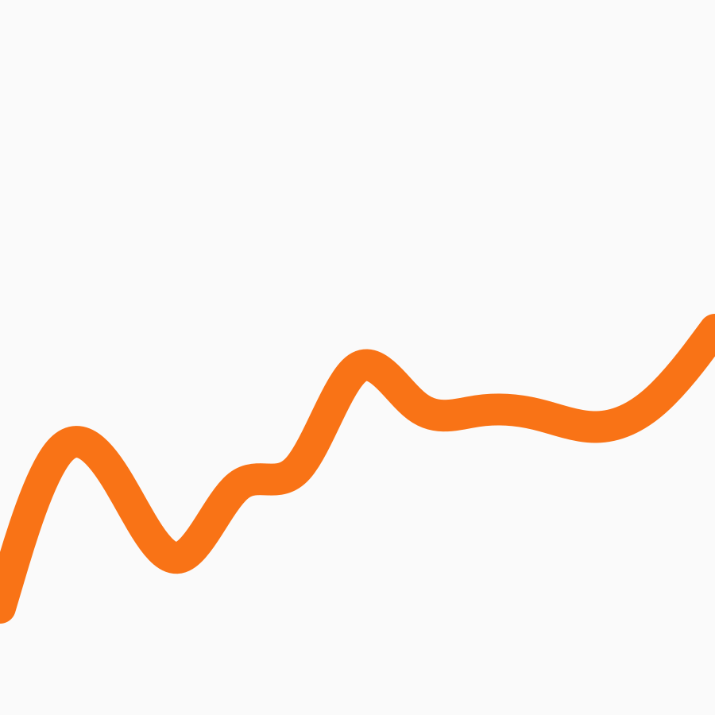

<section class="w-full p-4">
  <div class="mb-7 flex justify-between items-center">
    <h1 class="text-start text-neutral-600 text-3xl">Cash-Flow Analitys</h1>
    <div class="flex justify-center items-center gap-2">
      <span class="text-zinc-300 text-sm">sorty by</span>
      <span
        class="relative flex justify-center items-center gap-2 rounded-lg bg-zinc-200 p-2 cursor-pointer"
      >
        <span class="text-neutral-800 text-sm cursor-pointer">Month</span>
        <label for="month" id="label-month">
          <i class="bi bi-calendar-check-fill cursor-pointer text-neutral-600">
          </i>
        </label>
        <input
          id="month"
          class="hidden absolute top-0 right-0"
          name="month"
          type="date"
        />
      </span>
    </div>
  </div>
  <section
    class="p-6 pb-14 flex justify-between items-center gap-3 mb-14 rounded-lg bg-white shadow-lg"
  >
    <section class="flex flex-col gap-1 justify-center items-center">
      <div class="flex gap-2 flex-col justify-start items-center w-[24rem]">
        <div class="rounded-xl bg-zinc-50 w-full h-[13rem] p-3 shadow-md">
          <div class="flex justify-between items-center mt-[-6px]">
            <h4 class="text-black font-bold">Net cash</h4>
            <i class="bi bi-three-dots font-light text-xl"></i>
          </div>
          <div class="flex justify-between items-center">
            <div class="flex flex-col justify-center items-start">
              <div class="flex justify-between gap-7 items-center">
                <h5
                  class="text-black font-bold text-lg flex justify-between items-center"
                >
                  <i class="bi bi-dot text-xl text-orange-300"></i>Inflow
                </h5>
                <span
                  class="flex justify-center items-center text-black font-semibold text-[13px]"
                  ><i class="bi bi-arrow-up text-green-500"></i>60%</span
                >
              </div>
              <div class="flex justify-center gap-3 items-center">
                <h5
                  class="text-black font-bold text-lg flex justify-between items-center"
                >
                  <i class="bi bi-dot text-xl text-orange-500"></i> Outflow
                </h5>
                <span
                  class="flex justify-center items-centert text-black font-semibold text-[13px]"
                  ><i class="bi bi-arrow-down text-red-500"></i>80%</span
                >
              </div>
            </div>
            <div>
              <div class="relative">
                <span class="absolute top-[38%] left-24 text-center font-medium"
                  >30% <br />
                  <span class="text-sm">Growth</span></span
                >
                <canvas
                  class="ms-[-75px] mt-[-8px]"
                  id="chart-cash-flow"
                  width="400"
                >
                </canvas>
              </div>
            </div>
          </div>
        </div>
        <div class="flex gap-2 justify-center items-center w-full">
          <div
            class="relative rounded-xl bg-zinc-50 h-[8rem] w-full p-3 shadow-md"
          >
            <h4 class="text-black font-bold">Inflow</h4>
            <h3 class="text-[11px] text-zinc-400">current month</h3>
            <div
              class="bg-orange-200 flex items-center text-orange-500 rounded-xl mt-2 p-2 font-bold text-center h-9 w-11 text-sm"
            >
              35%
            </div>
            
          </div>
          <div
            class="relative rounded-xl bg-zinc-50 h-[8rem] w-full p-3 shadow-md"
          >
            <h4 class="text-black font-bold">Outcome</h4>
            <h3 class="text-[11px] text-zinc-400">current month</h3>
            <div
              class="bg-orange-200 flex items-center text-orange-500 rounded-xl mt-2 p-2 font-bold text-center h-9 w-11 text-sm"
            >
              75%
            </div>
            
          </div>
        </div>
      </div>
    </section>
    <section></section>
  </section>

  <h2 class="text-neutral-600 text-2xl">Cash Flow waterfall</h2>

  <section
    class="flex justify-between items-center gap-4 my-8 w-full bg-white rounded-lg p-6"
  >
    <!-- <canvas class="w-[-10rem]" id="chart-expenses-comparison">{{
        chartExpensesComparison
      }}</canvas> -->
  </section>

  <h3 class="text-neutral-600 text-2xl">Cash-Flow Timeline</h3>
  <section
    class="flex justify-between items-stretch mb-8 mt-8 w-full bg-white rounded-lg p-6"
  ></section>
  <h3 class="text-neutral-600 text-2xl">Scenario Analisys</h3>
  <section
    class="flex justify-between items-stretch mb-8 mt-8 w-full bg-white rounded-lg p-6"
  ></section>

  <div class="flex justify-center items-center gap-2 mt-8">
    <span
      class="cursor-pointer text-[14px] rounded-lg p-1 text-zinc-500 hover:text-zinc-400"
      >Export as <i class="bi bi-filetype-csv font-bold"></i>
    </span>

    <span>/</span>
    <span
      class="hover:text-zinc-400 cursor-pointer text-[14px] p-1 text-zinc-500"
      >Download report <i class="bi bi-filetype-pdf font-bold"></i
    ></span>
  </div>
</section>

<!--
Here’s a different approach to structuring your cash flow page for a more intuitive and unique design:

### 1. **Vertical Split Layout**
- **Title:** "Cash Flow Analysis"
  - Centered at the top.
  - Large, bold font.
- **Date Range Picker:**
  - Below the title, centered.
  - Options like "This Month," "Last Month," "Custom Range."

---

### 2. **Side-by-Side Summary**
- **Left Column:**
  - **Net Cash Flow Card:**
    - Large and prominent at the top, showing the overall cash flow status (Positive/Negative) with a color-coded indicator.
  - **Total Inflows & Outflows:**
    - Two smaller cards stacked below the Net Cash Flow card.
    - **Inflows:** Display total cash inflows.
    - **Outflows:** Display total cash outflows.
- **Right Column:**
  - **Cash Flow Breakdown by Category:**
    - A radial bar chart or donut chart displaying cash flow distribution across categories (e.g., operating, investing, financing).
  - **Cash Flow by Source/Use:**
    - A stacked bar chart below the radial chart, showing inflows and outflows by source or use.

---

### 3. **Cash Flow Waterfall Chart**
- **Center Stage Chart:**
  - Positioned prominently in the middle of the page.
  - A waterfall chart that visually represents the step-by-step cash flow, showing how cash flows in and out throughout the period.
  - Each bar in the waterfall chart should be color-coded to show inflows and outflows.

---

### 4. **Detailed Cash Flow Timeline**
- **Interactive Timeline:**
  - Positioned below the waterfall chart, spanning the full width of the page.
  - A timeline with markers for significant cash flow events, such as large inflows, major outflows, or unexpected changes.
  - Hovering over a marker reveals more details, and clicking on it provides in-depth information.

---

### 5. **Cash Flow Health Indicator**
- **Dynamic Indicator:**
  - Positioned to the right of the timeline.
  - A visual gauge or meter that indicates the overall health of your cash flow (e.g., "Healthy," "Caution," "Critical").
  - The indicator changes based on the net cash flow and the balance between inflows and outflows.

---

### 6. **Scenario Analysis Slider**
- **Interactive Slider:**
  - Positioned below the timeline and health indicator.
  - Allows users to simulate different scenarios by adjusting inflows and outflows directly on the page.
  - As the user adjusts the slider, the waterfall chart and health indicator update in real-time to reflect the changes.

---

### 7. **Footer Section**
- **Export & Reports:**
  - Positioned at the bottom, full-width.
  - Include buttons for "Export as CSV," "Download Cash Flow Report," etc.

---

### Visual Representation:

```
+-------------------------------------------------------------+
|                       Cash Flow Analysis                    |
|                 [Date Range Picker: This Month ▼]           |
+-------------------------------------------------------------+
|  +------------+    |  +-----------------------------+       |
|  | Net Cash   |    |  | Cash Flow Breakdown by       |       |
|  | Flow       |    |  | Category (Radial Chart)      |       |
|  +------------+    |  +-----------------------------+       |
|  | Total      |    |  +-----------------------------+       |
|  | Inflows    |    |  | Cash Flow by Source/Use      |       |
|  +------------+    |  | (Stacked Bar Chart)          |       |
|  | Total      |    |  +-----------------------------+       |
|  | Outflows   |                                             |
+-------------------------------------------------------------+
|                  Cash Flow Waterfall Chart                  |
|                            [Chart]                          |
+-------------------------------------------------------------+
|               Detailed Cash Flow Timeline                   |
|                            [Timeline]                       |
|                         +---------------------+             |
|                         |  Cash Flow Health    |             |
|                         |  Indicator (Gauge)   |             |
|                         +---------------------+             |
+-------------------------------------------------------------+
|                   Scenario Analysis Slider                  |
|                          [Slider]                           |
+-------------------------------------------------------------+
|                    [Export as CSV] [Download Report]        |
+-------------------------------------------------------------+
```

This wireframe offers a fresh perspective with a vertically split layout, a prominent waterfall chart, and an interactive timeline. The design emphasizes clarity and interactivity, making the cash flow page intuitive and visually distinct from the traditional dashboard layout. -->
